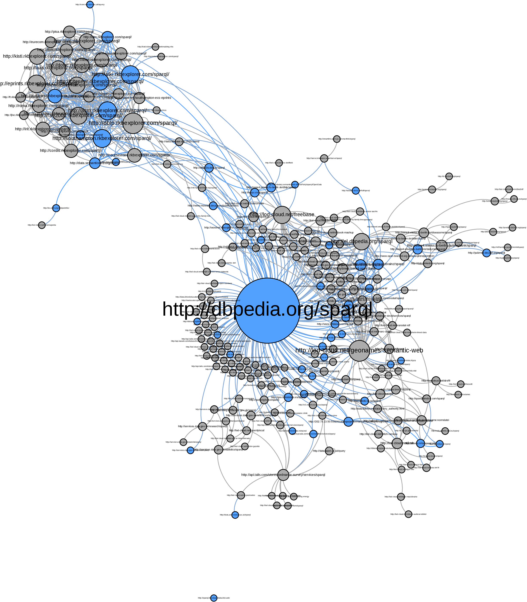
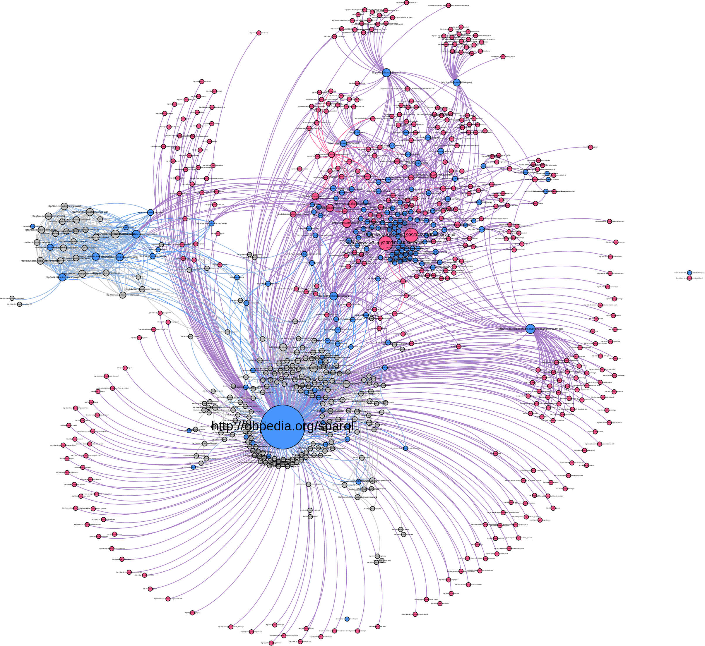

About me
Panoramic view
Structure of RDF graphs: SampLD
LOD cloud as a whole: LOD Laundromat
Access to and use of the LOD cloud: YASGUI
SampLD: why?
Big datasets, and we only
need
a fraction
Different scenarios:
We know which parts are more-or-less interesting: Informed Sampling
We only have the dataset to go by: Uninformed sampling
SampLD: How?
Network Analysis
e.g. Indegree, Outdegree, Pagerank
Rewrite RDF
Rank Triples
Select
k
best triples
SampLD: Results
click for more results
LOD Laundromat
Publishing other peoples dirty data
Laundromat: Why?
High levels of dirty data on LOD cloud
Existing solutions insufficient: standards, guidelines, tools
Instead, we remove the stains from the LOD cloud
Low ambitions, high usability/sustainability: publishing as gzipped ntriples ('sibbling datasets')
Laundromat: Approach
Automatic process, crawling any RDF format
Seed list from catalogues, VoiD descriptions, user input
Transparent: Report any TCP, HTTP, and parse errors
Cleaning process
Remove duplicates
Remove blank nodes
(Meta)Data accessible at
http://lodlaundry.github.io
Laundromat: Future work
Increase coverage
Start analyzing the LOD cloud
Create dataset descriptions, e.g. VoiD and Bio2RDF metrics
Analyze the structure of LOD cloud as a whole
New and improved LOD cloud picture
Using the LOD cloud: YASGUI
YASGUI: Background
Based on the FLINT editor
Enhanced with services such as
prefix.cc
,
Linked Open Vocabularies
,
datahub.io
, and
preflabel.org
.
Recently, published separate YASQE and YASR js libraries
Primary goal: making Semantic Web easier
Bonus: insight into
usage
of SPARQL endpoints
YASGUI: Logs
Unique collection of queries, solely made by humans, spanning both private and public endpoints
60% agree to track site usage
~3.000 users
~45.000 queries
~500 endpoints
Majority of queries executed on DBpedia
Use of the LOD cloud

Use of namespaces

Summary
SampLD: using structural properties to create samples
LOD Laundromat: publishing other peoples dirty data
YASGUI: increasing ease of access + analyzing LD usages
Questions?